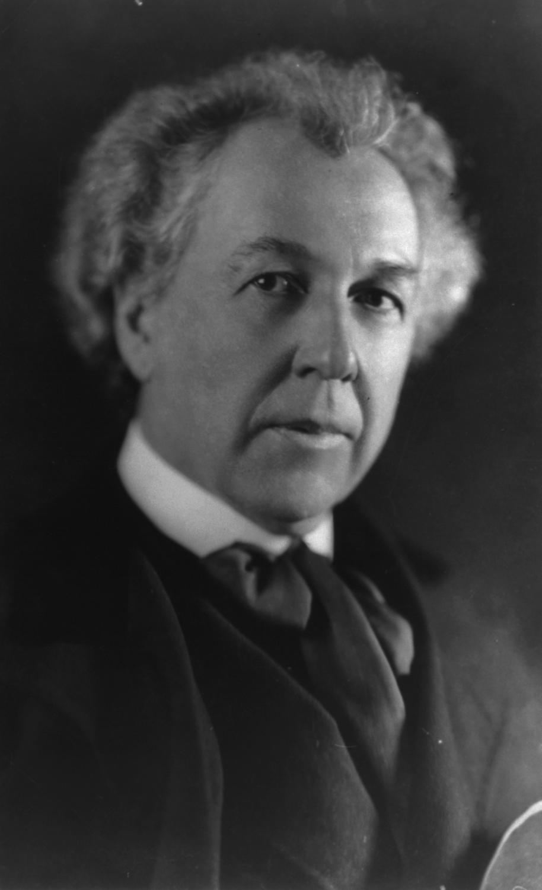

|  |
|
Wright promoted organic architecture (exemplified by Fallingwater), was a leader of the Prairie School movement of architecture (exemplified by the Robie House and the Westcott House), and developed the concept of the Usonian home (exemplified by the Rosenbaum House). His work includes original and innovative examples of many different building types, including offices, churches, schools, hotels, and museums. Wright also often designed many of the interior elements of his buildings, such as the furniture and stained glass.
Wright authored twenty books and numerous articles and was a popular lecturer in the United States and in Europe. His colorful personal life frequently made headlines, most notably for the 1914 fire and murders at his Taliesin studio.
Already well-known during his lifetime, Wright was recognized in 1991 by the American Institute of Architects as "the greatest American architect of all time"